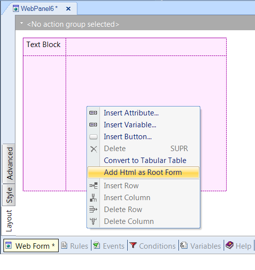
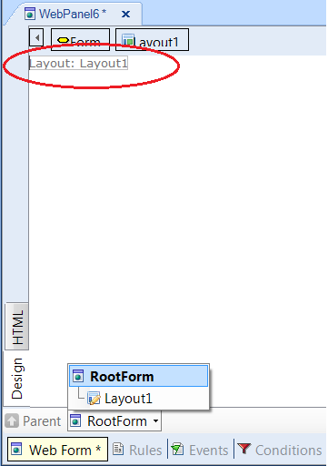
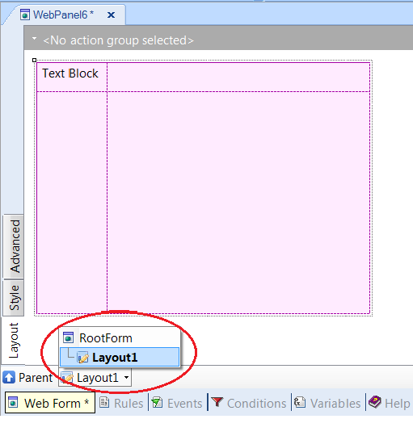

This is an option of the contextual menu of the Web Abstract Editor form. DescriptionA Responsive web form (a form which uses the abstract editor) can be nested inside an HTML Root form. If the user needs to change the Root Form to use the HTML Editor, the way to do it, is to add an HTML Root form to the abstract layout he has been working on. By right clicking in the abstract web form - when it is not empty - there is an option in the contextual menu, called Add HTML As Root Form, as the figure shows:  As a result of executing this menu option, an HTML form is created as parent of the abstract layout:  By double clicking on the Layout control, you can edit the abstract layout and visualize the resulting tree structure:  NoteThere is no automatic way to convert an abstract layout to an HTML layout. By using the menu option explained here the user has more flexibility in building the HTML form in a gradual manner starting from the initial HTML web form automatically created.
|